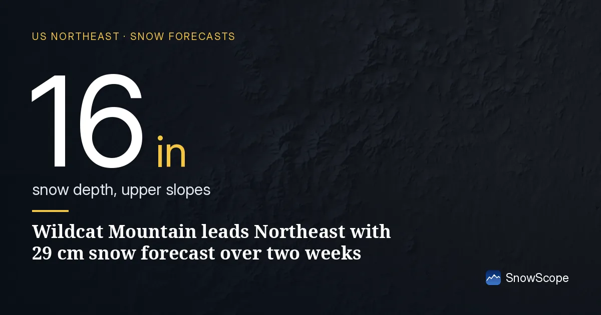
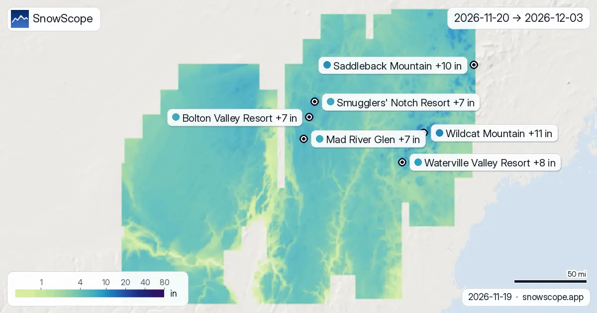
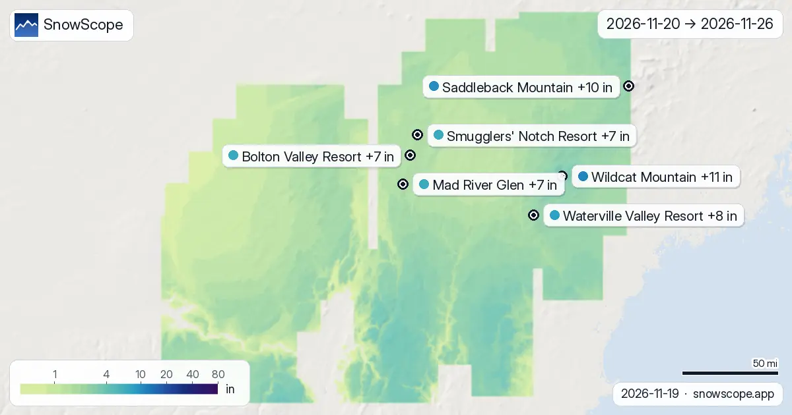
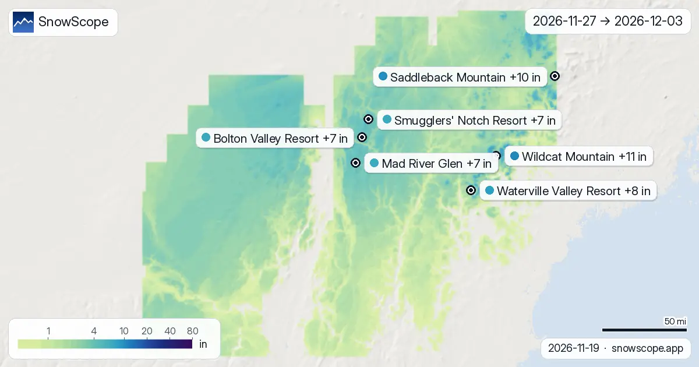
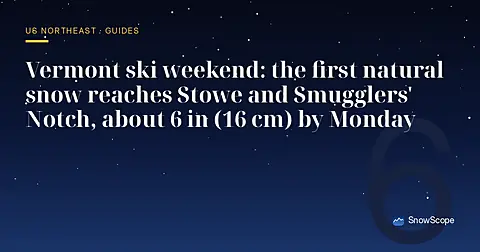

Wildcat Mountain leads Northeast with 29 cm snow forecast over two weeks
Wildcat Mountain stands apart from other Northeast resorts over the next two weeks, with SnowScope forecasting 29 cm of new snow by December 3rd. This advantage stems from both elevation and the timing of two distinct storm systems, the first arriving late next week.
See the live snow forecast for Wildcat Mountain in the SnowScope appSnow depth, powder alerts and the 3D map, free.
Why Wildcat Mountain leads
Wildcat Mountain's forecast of 29 cm places it ahead of Saddleback Mountain, which will receive 26 cm, and all other tracked resorts. The difference reflects terrain exposure and elevation: Wildcat's upper slopes sit at 1,137 m, capturing snow from systems that may weaken or miss lower terrain.
The Northeast region as a whole faces a modest two-week outlook. Our estimates a maximum of 34 cm across all terrain between 1,000 m and 1,500 m elevation. Only about 1,107 km² of the region's 133,200 km² of mountains will see 20 cm or more. No area is forecast to accumulate 50 cm. This is early-season snow on thin ground.
| Resort | Snow depth | New snow, 72 h | Coming, next days | Top |
|---|---|---|---|---|
| Wildcat Mountain | 16 in (40 cm) | 0 in (0 cm) | 0 in (0 cm) | 3,973 ft (1,211 m) |
| Saddleback Mountain | 0 in (0 cm) | 0 in (0 cm) | 0 in (0 cm) | 3,996 ft (1,218 m) |
| Waterville Valley Resort | 0 in (0 cm) | 0 in (0 cm) | 0 in (0 cm) | 3,816 ft (1,163 m) |
| Bolton Valley Resort | 0 in (0 cm) | 0 in (0 cm) | 0 in (0 cm) | 3,117 ft (950 m) |
| Mad River Glen | 0 in (0 cm) | 0 in (0 cm) | 0 in (0 cm) | 3,629 ft (1,106 m) |
| Smugglers' Notch Resort | 1 in (3 cm) | 0 in (0 cm) | 0 in (0 cm) | 3,648 ft (1,112 m) |

Two storms, two weeks
New snow will fall in bursts rather than a continuous snow cover. Week one (November 20–26) accounts for roughly half the region's total forecast snow, with November 26th emerging as the strongest day. Mount Snow leads that day across the region, with 10 cm forecast. Wildcat Mountain will see 9 cm on November 26th, followed by 6 cm on November 27th as a second system moves through.
Week two (November 27–December 3rd) will deliver the remainder. The snowiest day for Wildcat Mountain falls on December 3rd, when 10 cm is forecast. This is a delayed peak—most resorts experience their deepest snowfall in the final days of the outlook. For comparison, Bolton Valley Resort and Mad River Glen both peak on November 27th with 11 cm and 10 cm respectively, then see minimal accumulation afterward.

What 29 cm means for water storage
From a hydrological perspective, 29 cm of new snow at Wildcat Mountain's elevation represents meaningful but limited water equivalent. Fresh early-season snow typically holds 8–10 percent water by weight, so this accumulation translates to roughly 23–29 mm of water. At mountain scale, this matters: snow acts as a slow-release reservoir, feeding streams and groundwater through the winter and spring melt. However, early November snow often melts partially or entirely during warm spells before a stable snowpack forms.
Wildcat Mountain currently holds 40 cm of snow on its upper slopes as of today (November 19th). The incoming 29 cm will increase that base, but rocks and vegetation may remain exposed in thin-snow patches, particularly on south-facing slopes and below 1,000 m.

Upper-elevation advantage
Height shapes the forecast across the Northeast. Terrain between 1,000 m and 1,500 m will average 17 cm of new snow over the two weeks, with the upper quarter of that range reaching 26 cm. Below 1,000 m, snow will be scantier and more vulnerable to thaw. Wildcat Mountain benefits from both height and position: its peak reaches 1,211 m, well above the transition zone where rain becomes more likely. Lower resorts such as Bolton Valley Resort (950 m peak) and Mad River Glen (1,106 m) will accumulate less—18 cm and 18 cm respectively.
This elevation effect matters for skiing. Upper slopes will hold snow longer than base areas, and runs facing north will retain it longer than those facing south. Early-season skiers should plan to ski higher and north-facing terrain when it is available.
Timing for skiers
Wildcat Mountain will see snow on five separate days over the two weeks, with three days bringing 5 cm or more. The concentrated bursts on November 26–27 and December 3rd create two brief windows of fresher snow. Between these events, November 28–December 2 will be mostly dry, so early turns after November 27th will ski into settled, compacted conditions rather than powder.
The forecast carries the usual uncertainties of a two-week horizon. Storms may intensify, stall, or weaken. Warm air could reduce accumulation at lower elevations. The Forecasts agree on the broad pattern—two pulses, with the second arriving in early December—but disagree on intensity. Plan to visit Wildcat Mountain around November 26–27 or early December, check the official avalanche bulletin if venturing off-piste, and expect variable coverage below 1,000 m.
Tips for skiers
- Wildcat Mountain's upper slopes (above 1,100 m) will retain the most snow through mid-December. Focus on these elevations, especially north-facing terrain, to find the deepest pack.
- Timing matters: November 26–27 and December 3rd are the forecast peaks. Snow falling between these dates will compress; fresh powder will be thin and brief.
- Early-season snow at this depth (average 29 cm) can hide rocks and stumps. Check the SnowScope app for measured depth at base and mid-mountain before each visit.
- If skiing off-piste, consult the official avalanche bulletin for the Northeast. Early-season snowpack stability depends on what lies beneath; a 29 cm accumulation over thin ground can slide.
About these numbers
Resort snow depths are the deepest snow on the resort's upper slopes on the date shown; they are estimates for an area, not a measurement at one point. Forecasts can change. Always read the official avalanche bulletin before going off-piste.
Official avalanche bulletins: Mount Washington Avalanche Center
Cite this report
For research, teaching or the press: the numbers and charts are free to reuse under CC BY 4.0 with this citation.
SnowScope (2026), Wildcat Mountain leads Northeast with 29 cm snow forecast over two weeks, https://snowscope.app/blog/en/2026/11/us-northeast-2-week-snow-forecast-maps-19-november-2026.html, accessed 2026-11-19
SnowScope (Atlas Labs). (2026, November 19). Wildcat Mountain leads Northeast with 29 cm snow forecast over two weeks. SnowScope snow reports. https://snowscope.app/blog/en/2026/11/us-northeast-2-week-snow-forecast-maps-19-november-2026.html
BibTeX
@misc{snowscope2026usnortheast2weeksnowfore,
author = {{SnowScope (Atlas Labs)}},
title = {Wildcat Mountain leads Northeast with 29 cm snow forecast over two weeks},
year = {2026},
month = nov,
howpublished = {\url{https://snowscope.app/blog/en/2026/11/us-northeast-2-week-snow-forecast-maps-19-november-2026.html}},
note = {Published 2026-11-19 17:59 UTC; accessed 2026-11-19}
}· CC BY 4.0 · Methods, data and tools →
Wildcat Mountain: snow and temperature by height, this winter vs last (tools) →
Follow Wildcat Mountain
Free: a message when fresh snow is coming, and the forecast every morning.
More snow reports

Rain threatens upper slopes at Saddleback Mountain where 20 cm sits at 1,218 m. Freezing level rises to 3,760 m today, 22 November.

The snow has pulled back since 13 November, from 6,880 sq mi (17,820 km²) to 6,039 sq mi (15,640 km²) today; for 18 November our forecast gives …

Northern Vermont gets its first real snow of the season over the Thanksgiving weekend. Resort by resort, north to south, and what is normal for early December.